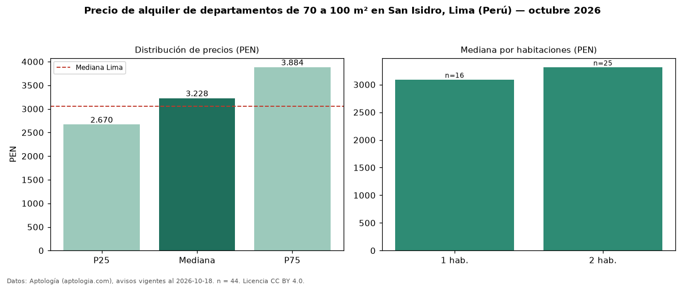

Precio de alquiler de departamentos de 70 a 100 m² en San Isidro, Lima (Perú) — octubre 2026
PEN 3.228 al mes es el canon mediano de departamentos de 70 a 100 m² en alquiler en San Isidro, Lima (Perú) (n = 44 avisos). Eso es 33 % menos que la mediana de todos los departamentos en alquiler de San Isidro (PEN 4.810, n = 475); este segmento reúne el 9 % de esos avisos. Por metro cuadrado, la mediana es PEN 41,18/m² al mes (n = 43), 11 % por encima del conjunto de referencia (PEN 37,01/m²). El área mediana anunciada es 80 m². El segmento con más oferta es el de 2 habitaciones (25 avisos, mediana PEN 3.315); pasar de 1 habitación a 2 habitaciones cambia la mediana +7 %. La mediana de todos los departamentos en alquiler de Lima es PEN 3.050 (+6 % de diferencia). La mitad central de los avisos va de PEN 2.670 a PEN 3.884 (razón 1,5), una dispersión moderada. Datos: Aptología (aptologia.com), CC BY 4.0 — https://www.aptologia.com/pe/alquiler/lima/san-isidro. Archivos: PDF, CSV con las cifras y gráfica PNG.

| Avisos únicos | 44 |
|---|---|
| Percentil 25 | COP 2.670 |
| Mediana | COP 3.228 |
| Percentil 75 | COP 3.883 |
| Mediana por m² | COP 41 |
Fuente: avisos vigentes de portales inmobiliarios recopilados por Aptología, deduplicados (mínimo 30 avisos únicos por celda). Precios pedidos, no cerrados. Fecha: 2026-10-18.